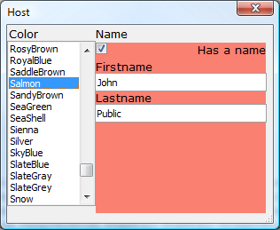

HtmlHost Example 5: Dynamically styled Html (a5:style tag)
Similar to conditional expressions, enable/disable and show/hide expressions , a5:style allows the style of an htmlhost tag to be a calculated value. In this example, which is an adaptation of the first example, we cause changes to the color that is selected from the color list to be used as the background color for the last column in the HTML table. Also, a checkbox has been added to toggle the visibility of the firstname and lastname embedded controls.dim colors as c = webcolors()
dim color as c = "White"
dim fname as c = "John"
dim lname as c = "Public"
dim has_a_name as l = .f.
dim html as c = <<%html%
<html>
<head>
<style>
</style>
</head>
<body id="body">
<table>
<tr>
<td>Color</td>
<td>Name</td>
</tr>
<tr>
<td a5:xdialog="[color^#colors!repaint]"
style="width:1in;height:2in;" ></td>
<td style="width:2in;vertical-align:top;"
a5:style="'width:2in;vertical-align:top;background-color:'+color+';'" >
<div a5:xdialog="(has_a_name)"
style="width:100%;height:.2in;text-align:right;" >Has a name</div>
<div a5:style="if(has_a_name,'','display:none;')" >
Firstname <div style="width:100%;height:.2in;" a5:xdialog="[fname]" />
Lastname <div style="width:100%;height:.2in;" a5:xdialog="[lname]" />
</div>
</td>
</tr>
</table>
</body>
</html>
%html%
ui_dlg_box("Host",<<%dlg%
{sizeToHost}
{stretch=width,height}
{htmlhost=html};
%dlg%,<<%code%
if a_dlg_button = "repaint" then
a_dlg_button = ""
ui_dlg_refresh("Host")
end if
%code%)
function webcolors as c()
webcolors = comma_to_crlf(<<%str%
AliceBlue,AntiqueWhite,Aqua,Aquamarine,Azure,Beige,Bisque,Black
BlanchedAlmond,Blue,BlueViolet,Brown,BurlyWood
CadetBlue,Chartreuse,Chocolate,Coral,CornflowerBlue,Cornsilk,Crimson
Cyan,DarkBlue,DarkCyan,DarkGoldenRod,DarkGray
DarkGrey,DarkGreen,DarkKhaki,DarkMagenta,DarkOliveGreen,Darkorange
DarkOrchid,DarkRed,DarkSalmon,DarkSeaGreen,DarkSlateBlue
DarkSlateGray,DarkSlateGrey,DarkTurquoise,DarkViolet,DeepPink
DeepSkyBlue,DimGray,DimGrey,DodgerBlue,FireBrick,FloralWhite
ForestGreen,Fuchsia,Gainsboro,GhostWhite,Gold,GoldenRod,Gray,Grey
Green,GreenYellow,HoneyDew,HotPink,IndianRed,Indigo,Ivory
Khaki,Lavender,LavenderBlush,LawnGreen,LemonChiffon,LightBlue
LightCoral,LightCyan,LightGoldenRodYellow,LightGray,LightGrey
LightGreen,LightPink,LightSalmon,LightSeaGreen,LightSkyBlue
LightSlateGray,LightSlateGrey,LightSteelBlue,LightYellow,Lime
LimeGreen,Linen,Magenta,Maroon,MediumAquaMarine,MediumBlue
MediumOrchid,MediumPurple,MediumSeaGreen,MediumSlateBlue
MediumSpringGreen,MediumTurquoise,MediumVioletRed,MidnightBlue
MintCream,MistyRose,Moccasin,NavajoWhite,Navy,OldLace
Olive,OliveDrab,Orange,OrangeRed,Orchid,PaleGoldenRod
PaleGreen,PaleTurquoise,PaleVioletRed,PapayaWhip,PeachPuff,Peru
Pink,Plum,PowderBlue,Purple,Red,RosyBrown,RoyalBlue,SaddleBrown
Salmon,SandyBrown,SeaGreen,SeaShell,Sienna,Silver
SkyBlue,SlateBlue,SlateGray,SlateGrey,Snow,SpringGreen,SteelBlue
Tan,Teal,Thistle,Tomato,Turquoise,Violet,Wheat
White,WhiteSmoke,Yellow,YellowGreen%str%)
end function